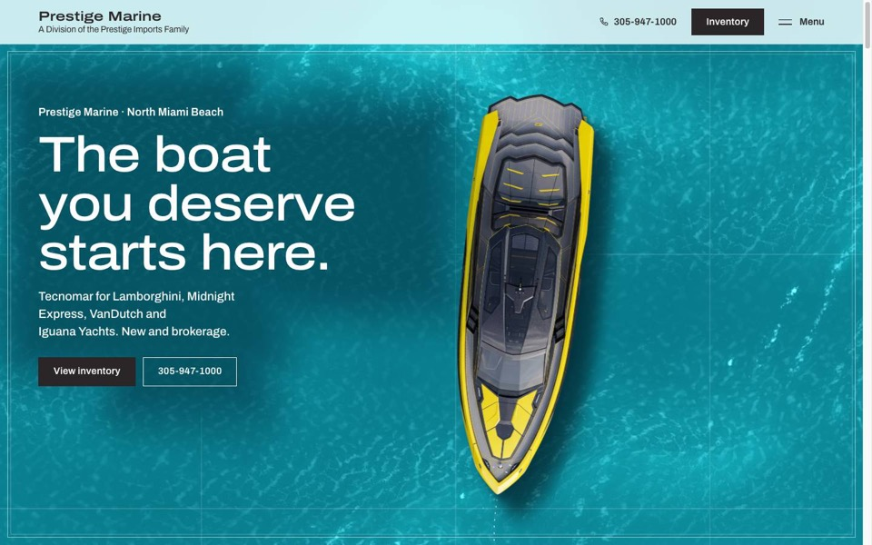
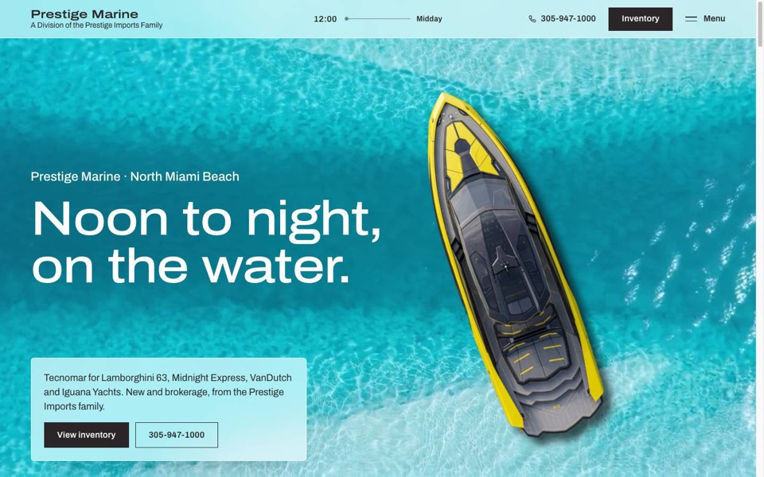
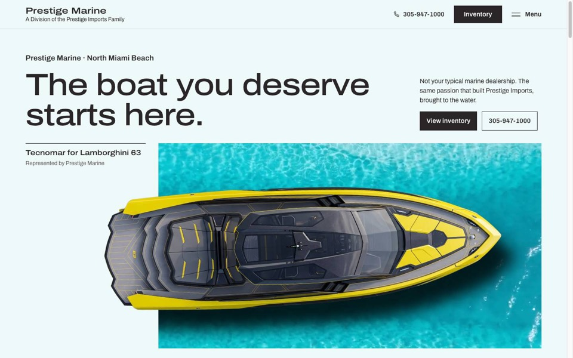
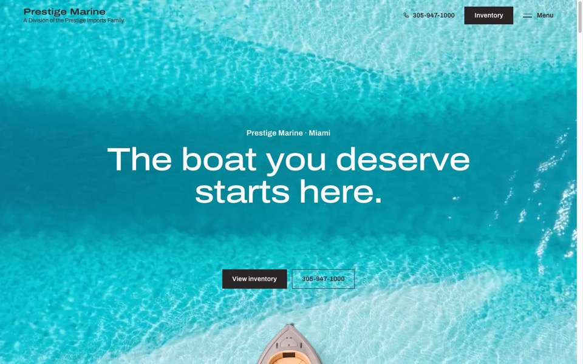
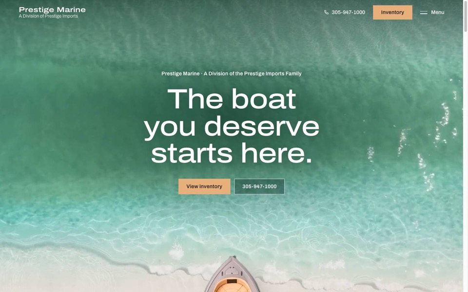

Child site of Prestige Imports, Miami. Prototypes for review, 26 Oct 2026. Forms are mock-ups; water footage and the yellow Tecnomar seen from above are generated artwork.

A — The ChartThe page as a nautical chart: one continuous sea, a course with waypoints, the yacht follows it, a quiet navigator's HUD. The flipped surf footer lives here.

B — Day to NightThe scroll is the clock: midday azure, golden hour, dusk, a moonlit sea with the Tecnomar's lights on, then first light.

C — The ShowroomBoats shown like supercars: editorial grid, water in windows, the yacht breaking out of its frame, cards stepping in, inventory on asphalt.

v2Azure water, no beige, the ME52 hull sails over bright flats, berth-sheet inventory, full surf footer.

v1First build: the Midnight Express 52 Vitesse rises over a green-teal loop into a sand ground.